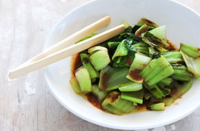
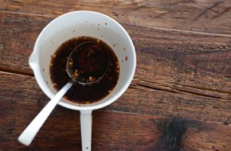

 Book Choi Japanese Vegetarian Five week course in London A five week introduction to traditional Japanese
 Terayaki sauce Sauces Masterclass One day workshop An intensive one-day course looking at how to create...